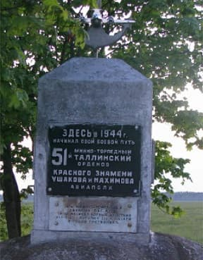
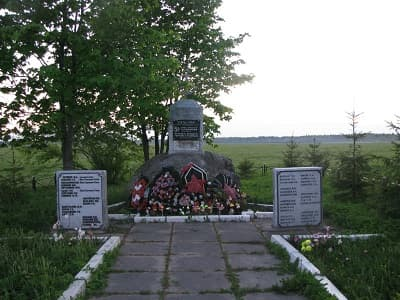

Клопицы старинный крупный населенный пункт для Волосовского района, с достойной историей, со сменой именитых владельцев, с военной биографией.
Название не от того, что здесь было много клопов, а от того, что когда времена были шведскими место именовалось "Klopitsa".
Но ничего нового, по сравнению с уважаемыми источниками, привести не могу, за исключением одного - здесь был военный аэродром и память о нем хранят памятники.
Когда фронт откатился к Эстонской границе и стабилизировался на рубеже реки Нарова, Красная армия начала подготовку к взлому нарвского укрепрайона (линия Пантеры).
В июне 1944 года в районе д. Клопицы организуется аэродром и формируется 51-й минно-торпедный авиационный полк краснознаменного Балтийского флота, вооруженный американскими самолетами "Бостон" А-20.
В дальнейшем полк примет активное участие в боевых действиях на Балтийском море, будет награжден орденами Красного знамени, Ушакова II степени, Нахимова I степени и получит наименование Таллинский.
Начиная с 23 июля, полк принимал активное участие в Нарвской наступательной операции.

> За памятником поле военного аэродрома